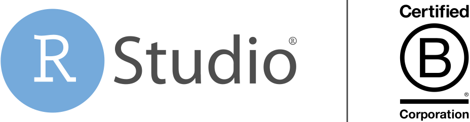

| Obstacles | Solutions |
|---|---|
| Lack of reuse | Build your analyses with code, not clicks |
| Lack of reproducibility | Manage data science environments for repeatability |
| Stale insights and repetitive work | Deploy tools to keep insights up to date |
| Unsustainable data science platforms | Embrace platforms that support open source software |
Figure 1: Common obstacles to delivering durable value with your data science and approaches to mitigate them.
A Durable Approach to Data Science
To make the benefits of your data science insights durable over the long term, we recommend applying Serious Data Science principles as outlined in Figure 1. We suggest that your data science teams:
- Build your analyses with code, not clicks. Data science teams should use a code-oriented approach because code can be developed, applied, and adapted to solve similar problems in the future. This reusable and extensible code then becomes core intellectual property for your organization which will make it easier to solve new problems in the future and increase the aggregate value of your data science work.
- Manage data science environments for repeatability. Organizations need ways to reproduce reports and dashboards as projects, tools, and dependencies change. Otherwise, your team may spend far too much time attempting to recreate old results, or worse, it may give different answers to the same questions at different points in time, thereby undermining your team’s credibility. Use packages such as renv for individual projects and use products such as RStudio Package Manager to improve reproducibility across a larger organization.
- Deploy tools to keep insights up to date. No one wants to make a decision based on old data. Publish your insights on web-based tools such as RStudio Connect to keep your business stakeholders up to date with on-demand access and scheduled updates. Deploying insights this way also frees the data scientist to spend their time solving new problems rather than solving the same problem again and again.
Sharla Gelfand recently spoke at rstudio::conf 2020 about the benefits of reproducible reports for the College of Nurses of Ontario:
Building on a Sustainable Foundation
To this point, our serious data science approach has largely been independent of the underlying data science platform. However, your choice of data science platform can itself pose a risk to the durability of the work you do. Your data platform can become unsustainable over time due to:
- High license costs: Expensive software and variable budgets often force teams to restrict platform access to a select few data scientists. Worse, those teams may have to hold off on tackling new data science projects or deploying to more stakeholders until Finance approves money for more seats.
- Dwindling communities: If the platform or language decreases in its popularity with developers, it may become difficult to find new data scientists who are familiar with it.
- Vendor acquisitions or shifts in business models: If the platform maker is acquired by a larger company or shifts their business model, it may abandon or scale back investment in their previous product. Alternatively, sometimes vendors move from an innovation to a value extraction model, where locked-in customers are forced to pay higher license fees over time.
Regardless of the underlying reason, an unsustainable platform can drive up costs and potentially even force an organization to start from scratch with a new platform. To reduce these threats, we recommend embracing platforms that support open source software. Doing so improves the sustainability of your data science because these platforms are:
- Cost effective: Open source software can deliver tremendous value at minimal cost, which mitigates the risk of losing your data science platform due to future budget cuts. It also makes it much easier to expand to more users as your data science team grows.
- Widely supported: The R and Python open source communities are large and growing, so you can be confident these tools, and the expertise to use them will be available for many years to come. These communities are further bolstered by RStudio’s mission, which is dedicated to sustainable investment in free and open-source software for data science.
- Vendor independent: RStudio’s founder JJ Allaire wrote the following in a recent blog post:

“Users should be wary of the underlying motivations and goals of software companies, especially ones that provide the essential tools required to carry out their work.”
JJ Allaire, CEO, RStudio
rstudio.com/pbc-keynote
With this caution in mind, consider building your data science investments on a platform with an open source core. Should they change their business or licensing model, everything you need to do your core data science work will still be freely available, and you can freely choose whether you want to pay the vendor’s price.
Learn more about Serious Data Science
For more information, check our previous posts introducing the concepts of Serious Data Science, drilling into the importance of credibility, and exploring how to apply agile principles to your data science work.
If you’d like to learn more, we also recommend:
- In this upcoming webinar, Beyond Dashboard Fatigue , we’ll discuss how to repeatably deliver up-to-data analyses to your stakeholders using proactive email notifications through the blastula and gt packages, and how RStudio pro products can be used to scale out those solutions for enterprise applications
- In this customer spotlight, Paul Metcalf, Head, Machine Learning and AI, Oncology R&D at AstraZeneca, describes how his team “created a robust toolchain for routine tasks and enabled reproducible research” with R, RStudio, and Shiny.
- To learn more about how RStudio Connect makes it simple to deliver repeatable, up-to-date data products to your stakeholders, check out the RStudio Connect product page.
- RStudio’s Sean Lopp explores the importance of Reproducible Environments in this RViews Blog post.
- Garrett Grolemund presented a webinar on the role that computational documents like RMarkdown play in supporting reproducibility in production.
- What Makes RStudio Different explains that RStudio’s mission is to sustainably create free and open-source software for data science and allow anyone with access to a computer to participate freely in a data-centric global economy.